A DreamerV4-style League of Legends agent, its perception stack, and the
month spent discovering that the behaviour-cloning target was sitting in the model’s own input
ahriuwu · project report · 2 September 2026 · measurements re-run for this document unless marked otherwise
The agent could not play. First it failed to walk to top lane — a behaviour that occurs
in essentially 100% of the training replays. Once that was fixed it could not last-hit.
The investigation that followed found that the movement head predicts where to click by
copying its own previous action rather than by reading the screen, and that this was the
correct solution to the objective as written: the movement action is a held click target,
bit-identical on 87.3% of consecutive frames, and it is fed to the model as action conditioning.
Copying is worth 0.83 bits for free; the pixels are worth 0.31 bits of work. Cutting that channel
at inference — no retraining — fixed walking to lane (wrong-lane games 27.5% → 10%,
per-game direction error 72.7° → 29.9°). A full retrain with the channel removed then
failed its acceptance test. And the twist this report builds to: our entire evaluation stack
measures imitation fidelity, not play quality — and a human can play at
plat/emerald level from the decoded tokenizer latents, so the information is demonstrably there.
We were measuring the wrong thing.
Contents
1 What the system is
2 The data
3 The symptom
4 The investigation, and its false starts
5 The root cause
6 The fix, and what it bought
7 What the retrain showed
8 The evaluation problem
9 The rest of the stack
10 How we compare to the field
11 What is actually blocking
12 Honest limitations
A Which measurements to trust
B Figure provenance
1. What the system is
The target architecture is Dreamer 4 (arXiv 2509.24527), adapted to League of Legends top lane
with a single champion (Garen). There is no official release of Dreamer 4 —
danijar/dreamer4 and danijar/dreamerv4 both 404, and the project page
links only to the paper. Every implementation in the field, ours included, is an independent
reading of the same 32-page paper. The stack has four stages.
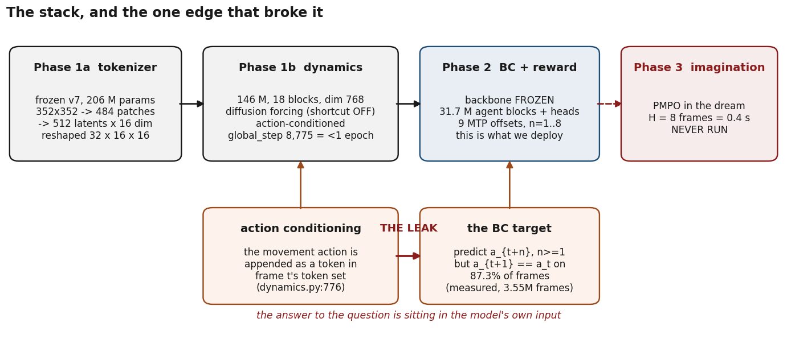
Figure 1. The four stages, and the one edge that broke the whole thing.
The movement action reaches the world model as a token in frame t’s token set
(dynamics.py:776); the agent token cross-attends to exactly that set. Behaviour
cloning then asks the model to predict at+n for n ≥ 1 —
and on a hold frame at+1 is bit-for-bit at. The target is in
the input.
1.1 Phase 1a — the tokenizer
A block-causal ViT masked autoencoder, 206 M parameters, trained on 352×352 replay frames
at 20 fps. Patch size 16 gives 484 patch tokens per frame. The bottleneck is a linear projection
to 512 latents × 16 dims followed by a tanh — exactly the paper’s
Appendix A shape — reshaped downstream to 32×16×16 for the dynamics. The
objective is reconstruction only: MSE + 0.2 · LPIPS, each term normalised by
its own running RMS. There is no GAN, no KL, no VQ, no latent regulariser; the paper has none
either, and any claim in this repo to the contrary has been struck.
Two deviations matter. First, masking is tube masking — one spatial mask reused
across all 20 frames of a clip — where the paper masks per image. A tube-masked HP bar is
unpredictable from any frame’s context, so the loss-optimal output is a generic mean bar,
which is the artifact observed. Second, the mask ratio ran on a linear warm-up curriculum that
a resume bug re-triggered on every requeue, so the measured mean input mask over training was
0.1–0.2 rather than the paper’s flat p ~ U(0, 0.9). The
MAE benefit the paper claims for spatial consistency was largely not purchased. Both are fixed
in code; both are baked into the shipped v7 checkpoint.
The measured plateau is objective- and data-limited, not capacity-limited: a nine-day
continuation bought +0.28 dB, and the effective rank of the bottleneck is
≈ 31 of 8,192 dimensions.
The strongest evidence in the whole project
Dani can play League at plat/emerald level from the decoded tokenizer latents —
i.e. a human, shown only what the tokenizer reconstructs, plays competently. This is the best
available proof that the representation is sufficient for the task, and it is stronger than any
probe in this document, because it is an end-to-end behavioural test with a known-competent
decoder attached. Every result below about “the signal is/is not in the features”
should be read against it. If a probe says the information is absent, the probe is more likely
wrong than the tokenizer is.
1.2 Phase 1b — the world model
A latent diffusion-forcing transformer over the frozen tokenizer’s latents. Production
checkpoint rollout_stage/desktop_resume_8775_stripped.pt: 146 M parameters
(114.9 M in the dynamics config, 146.3 M as loaded in Phase 2), 18 blocks, model dim 768,
12 query heads / 4 KV heads (GQA), latent dim 32 on a 16×16 grid, 8 register tokens,
soft cap 50, QK-norm, 2D RoPE spatially and 1D temporally, temporal attention at layer indices
3, 7, 11, 15. Per-frame token set is
[256 latent | 8 register | 1 action | 1 condition] = 266.
Actions reach the model through embed_actions, which sums per-component
embeddings and appends the result as a token in that frame’s set. Agent tokens live in a
separate residual stream that cross-attends into the final block’s output; no other
modality can attend back. That firewall is the paper’s requirement and we satisfy it
structurally rather than by an attention mask — which is stronger, but has a cost the
survey flags: our agent tokens read only the final layer, whereas every other
implementation interleaves them in the sequence and so gives them access to intermediate
features.
Four deviations are load-bearing.
Shortcut forcing is off. The production checkpoint is plain diffusion forcing, rolled
out at K=64 / d=1. VRAM-forced. Paper Table 2 shows the naive diffusion-forcing transformer at
K=64 is already strong (FVD 306); the collapse to 875 happens only at K=4 without the shortcut.
The cost is speed and Phase 3, not quality — but it leaves step_embed rows for
d > 1 permanently untrained.
The 16×16 grid is a reshape fiction. The 512 perceiver latents are global
readers with no spatial locality, so the dynamics’ 2D spatial RoPE and spatial attention
are applied over an axis with no spatial meaning. The paper reshapes too, so the shape
matches; the semantics are an assumption the architecture makes and the data does not
support.
Context length equals batch length. We train with
--seq-len-short 128 --seq-len-long 256 and max_seq_len = 256, and there
is no windowing anywhere — the attention mask is a plain unbounded causal mask. Paper §3.4
explicitly requires batch lengths longer than the context length, so that the transformer
does not overfit to always seeing a start frame at the beginning of its context. We violate this,
and the observed symptom is exactly the predicted one: dreams hold for about 10 frames and then
ghost. This is marked ACCIDENTAL in the deviations ledger; the codebase comparison argues it
should be raised from MED to HIGH impact.
Scale and budget. 146 M against the paper’s 1.6 B, at
global_step 8775, epoch 0 — less than one pass over the corpus. Nothing else
on the deviation list plausibly outweighs this.
And then Phase 2 feeds this model seq_len = 16 — an order of magnitude
outside the 128/256 regime it was trained in. That is not a considered choice either; it was
picked so that live inference at context 16 fits a 20 fps budget.
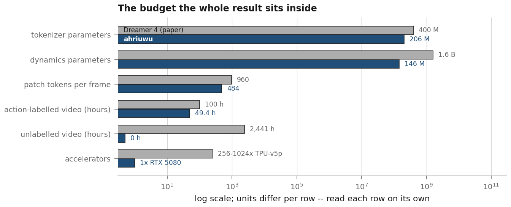
Figure 2. The budget everything in this report sits inside. Each row is a
within-row comparison on a log axis; units differ per row. The unlabelled-video row is the one
we chose rather than were forced into: the paper trains on 2,441 hours of unlabelled video
against 100 hours of actions, a ratio of roughly 25:1. Ours is 0:1 — roughly 450 hours of
YouTube Garen games exist on disk and are excluded from dynamics training.
1.3 Phase 2 — behaviour cloning and reward
The backbone is frozen. Only the agent-token blocks and the heads train: 31,668,736 trainable
parameters against 146,254,368 frozen. The paper finetunes the whole world model and keeps
applying the video-prediction loss; we do neither, because one RTX 5080 cannot.
The policy head is a per-token MLP producing, for each of 9 multi-token-prediction (MTP)
offsets, two 21-bin screen-position categoricals plus one gate logit. The gate is the largest
architectural addition with no paper analogue: humans issue about two movement commands per
second and we sample at 20 fps, so roughly 90% of frames are “the previous order is still
in effect”. The gate models when a command is issued separately from where it
points, as a mixture — with probability (1−g) repeat the previous bin, with
probability g draw a fresh one. It was a direct response to a measured pathology (BC
collapsing to a 1.8% action-change rate), not a guess.
The BC loss sums n = 1..8 and deliberately drops n = 0, because the agent token
at t is built from a window whose frame-t action token already contains
at. That is the label-leak fix, and it is necessary. It is also, as §5
shows, nowhere near sufficient.
1.4 Phase 3 — imagination
PMPO in the dream, horizon 8 frames = 0.4 s, γ = 0.997, λ = 0.95.
It has never been trained. One 11-batch smoke run on 2026-07-31, degenerate. §9.3
walks the four independent reasons why.
2. The data
The corpus is 146 labelled in-client replays of Masters+ Garen top-lane games
(/srv/nfs/datasets/lol_replays_16_9_772), of which 125 have v7 latents and are the
BC training set: 3,554,768 frames = 49.4 game-hours at 20 fps. Frames are rendered HUD-disabled
at 352×352, squished from 1280×720 with the aspect destroyed (a 3.64× horizontal
downsample).
Labels come from a memory-scanning recorder that reads the League client’s heap at
50 Hz. What it captures, per frame, for all ten champions: world position, HP, HP max, level,
gold_total, and (for the focus champion) cursor, camera and click stream. What it
does not capture, verified: minion positions or HP, turret HP, ward state, XP,
cooldowns, objective timers. So there is no wave state, no true CS count, no denies. Wave
management — the thing that actually separates Emerald from Gold — is out of reach
without new extraction. That is a hard constraint on what any reward can express, and it is
worth stating plainly before any of the modelling discussion.
Figure 3. Three label facts, all re-measured for this report from the 125-game
BC cache. (a) The click stream never starts before ~58 s in any game — median
61.0 s, min 57.8 s, max 69.5 s — because the memory extractor takes that long to lock on.
Until then _parse_movement_clicks defaults the movement target to (0.5, 0.5) with
movement_event=False, and the champion is camera-locked to screen centre, so that
label reads “your move order is your own feet”. 153,351 frames = 4.31% of the corpus,
and they are the only fountain and base frames in the dataset. Backfilling from
heading_screen (already present in labels.json, previously unread)
recovers the true walk direction to 11.5° and pulls the median unsupervised window down to
13.2 s. (b) The auxiliary state head has four targets; the third, enemy HP, is valid on
only 24.7% of frames. (c) Every ability is rarer than 1% of frames; R fires on 0.014%.
The documented fix for this — --ability-pos-weight 5.0 — is the parser
default, and every production launcher passed 1.0.
2.1 Two domain gaps that were measured rather than assumed
The HUD. The replay corpus is rendered HUD-off; live games have a HUD. Masking a HUD
over the frame moves the v7 latents by 2.6–5.2× a normal frame-to-frame step
(cosine 0.89–0.92) across six games — so the model is genuinely off-distribution for
an entire live game. Re-encoding clean frames reproduces the stored latents to 1e−11, so
those deltas are the perturbation and not encoder noise. But the same perturbation shifts the
commanded direction by only 8.2°, and the lane stays TOP in 5–6 of 6 games. The
HUD is a real shift and it is not the cause of the walking failure. The cheapest close is to mask
the HUD to black before encode_frame; the mask already exists at
sim_replay.py:96 and was never wired into the live path.
The frozen action embedding was fitted to a different target. The Phase-1 checkpoint
predates the movement_source flag, so action_embed['movement'] was
trained on the legacy per-frame cursor position. Phase 2 feeds it the click target.
Measured on one game, the two share a 21-bin cell on only 40.0% of frames, and the click
target is clamped to 0.0/1.0 where the cursor target never leaves the interior. The embedding is
excluded from the trainable prefixes, so it cannot adapt. Every frozen-backbone run since is
feeding an embedding out-of-distribution values on every frame.
2.2 A second spatial channel that should have existed all along
Late in this work Dani pointed out that the agent teleports the pointer straight to each click
target, which is not what a human does no matter what the loss says. That is an input-realism
argument, and it turns out the two quantities are completely different objects:
Measured over the 125-game corpus for this report. movement is where the player
right-clicked (a destination, held between clicks); cursor is where the mouse actually is
on each frame, recovered by projecting label.cursor.world through each
frame’s own camera and interpolating between observations.
channel
exact repeat, frame to frame
median step
p90 step
cursor (observation only)
28.5%
0.0039
0.0226
movement (conditioning INPUT)
85.2%
0.0000
0.0156
They differ by more than 0.05 screen units on 34.3% of frames, so one channel cannot represent
both. The cursor channel is now threaded into the dataset (schema 6) and a regression head sits
behind --cursor-weight, default 0. It is not a substitute for the walk-out
label fix: measured over three games’ walk-out windows, two of three have literally zero
cursor variance, because pipeline.py sets cursor_world = cast_target
when casting and last_click_world otherwise — so the cursor inherits the same
~60 s gap as the click stream. I claimed it might cover the walk-out before measuring it. It does
not.
3. The symptom
“Garen doesn’t even make it into top lane.” In the replay corpus the human
walks top in essentially 100% of games from 0:15–0:45. Live, the agent walked into bot lane.
That sentence hides a conjunction of about ten conditions — form a representation of the
screen; recover which map region you are in; recover which side you are playing; map that
to a direction; decide that now is a moment to issue a command; express the direction as a
screen point; sample it without the noise destroying it; convert to a pointer position;
right-click; have the game read the click as a move order. Nine of them can be individually
correct while the agent still walks bot, and each fails with a different observable signature.
The first document written about this enumerated 100 hypotheses with a distinguishing prediction
and a falsifying test for each, precisely because the symptom does not localise on its own.
What made it tractable was that the failure had a signature no plumbing bug produces:
the direction was a property of the random seed, not of the pixels. Across 40 closed-loop
games, under the deployed configuration, the lane the agent chose was at chance across sampling
seeds (28% same lane, chance 34.6%, agreement R = 0.299), and each individual game locked onto one
arbitrary direction and held it (directional concentration R = 0.643 / 0.739). Cut the action
channel and the preference becomes deterministic in the pixels: 100% same lane across seeds,
agreement R = 1.000, median direction change 0.2°.
4. The investigation, and its false starts
This section is the useful part of the report. Four confident conclusions were published inside
this project and then retracted after measurement, and one recurring failure mode caused most of
them. A reader should come away knowing which numbers to trust and why.
RETRACTED — small-sample artifact
“The 146M stack matches a no-pixel lookup table to 0.008 nats.”
The original measurement was 1,800 teacher-forced frames over 3 held-out games, scored against a
count table fitted on 5 games: model 4.365 nats vs table 4.357. On 13,627 event rows over 6
held-out games, against a table fitted on 24 training games, the head is
0.099 nats better than the table (4.050 vs 4.123), paired t = −2.31 (5 df),
negative in 5 of 6 games. The head is not literally a lookup table. It is marginally above one.
The dramatic version of the sentence was an artifact of scoring a 1,800-frame subset against a
5-game table.
RETRACTED — the acceptance bar was cleared by the model it was written to reject
“Event-frame categorical CE must fall clearly below 4.357 nats.”
A 24-game count table scores 4.123 and the shipped checkpoint scores 4.050. The bar as written
passes the broken model. On the 6-game split the two are 4.1214 (blind) and 4.1212 (deployed) —
two ten-thousandths of a nat apart, which is the version of the number that should be
quoted. Any future bar has to be stated against a table fitted on the training corpus and read on
the same split it will be judged on.
RETRACTED — probe-power artifact
“The signal is ABSENT from the features; the bottleneck is perception.”
This one cancelled a planned training program. It came from nested probes that fitted their
readout on five games. Refitting the identical feature on 30 games more than doubles the
effect (−0.052 → −0.126 nats) and takes the ablated feature past the deployed
head (−0.095). A separate, from-scratch replication sharing no code found 0.31 bits of
next-click direction in a single frozen latent. “A 5-game probe found nothing” and
“the information is not there” are different statements, and only the first was ever
measured.
RETRACTED — tests too short to see the divergence
“--movement-gate causes the NaN.” Three commits over two days
attribute a training divergence to three different flags in turn
(--movement-gate + --unfreeze-backbone, then unfreezing without the
video loss, then --train-action-embed). Each attribution was made from a run short
enough that the divergence had not yet appeared in the other arms. The A/B eventually ran the
deployed configuration precisely because it was the only one that trained clean, and the
mechanism is still not isolated.
RETRACTED — true on all frames, FALSE on the frames that matter
“Interpolating the movement target makes copying harder.” Interpolating the
held target between clicks does make it change every frame, so the naive
“at+1 == at” rate collapses. But the interpolated
value at t is a function of the next click, so the targets become self-predictive:
the blind-table bar drops from 4.12 to 1.73 nats. The A/B arms that used it
(R2, R3) are therefore not comparable to the arms that did not, and
that is visible in the logs as two different bars printed on the same page. The same technique
applied to the cursor channel is safe, because that channel is an observation and never an
action-conditioning input. Same operation, opposite consequence, decided entirely by what
consumes the array.
4.1 The recurring failure mode: checks that the bug satisfies
Five of the defects in this project were guarded by a test, and the test passed. In every case
the test was satisfied by the very failure it was meant to catch.
the check
why the bug passes it
The Phase-3 smoke test perturbs the policy head off zero-init “so the prior KL and
movement logits are non-degenerate”
It perturbs the dead head 0 too, so prior@0 is no longer uniform and the KL comes
out at 1.9e−3 instead of 7.29. The test noticed the degeneracy and worked around it in the
test instead of in the trainer.
Both preflights assert a positive gradient norm on the sum over all MTP heads
The sum is positive whenever any offset trains. A per-offset assertion fails on head 0 at
step 1.
scan_offsets.py accepts a gold_current memory offset if it sits
in a plausible range
A field that never moves passes that test. The sibling offset gold_earned is
required to change between two snapshots and is correct; gold_current is a
per-hero constant — Garen −3.77e22, Vladimir 1.46e31, Fiora 0.0 — on 130 of 130
hero-games audited.
The direction acceptance metric scores against a measured permutation null
A blind copier clears that null by 26 sigma. §8.
ab_checkpoints.cell_acc, the checkpoint comparison script
Scores the n=1 output against frame f’s own target, so ~99% of scored
frames have target NO_OP; and its denominator sits inside if gate, making it
|agent fired AND human fired| rather than |human fired| — so checkpoints with different
firing rates are not comparable, which defeats the script’s entire purpose.
There is a general shape here. A test that asserts “this quantity is non-degenerate”
is weaker than a test that asserts “this quantity has the value it must have”, and a
test written after the fact by someone looking at a failing assertion will tend to relax into the
first form. The one place we got it right is worth naming: the movement-target round-trip tests
plant distinguishable values and check exact inverses, and that entire area — bin
encode/decode, joint encode/decode, twohot, latent folds, RoPE index spaces, KV-cache paths,
camera projection — came back clean and has not needed re-auditing.
5. The root cause
The movement head predicts where to click by reading the previous click out of the action
tokens and perturbing it by about 1.5 bins.
The mechanism is three lines of architecture. embed_actions appends the action as
a token in frame t’s token set (dynamics.py:776). The agent token
cross-attends to exactly that set (dynamics.py:192-245). BC predicts
at+n for n ≥ 1, and on a hold frame at+1
is bit-for-bit at. So the answer to the question the loss asks is, on the large
majority of frames, already inside the model’s own input.
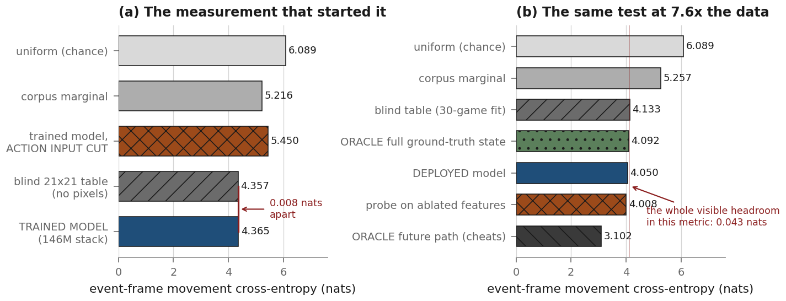
Figure 4. The core result, in its original and replicated forms.
(a) The measurement that started the investigation: 1,800 teacher-forced frames over 3
held-out games. A blind 21×21 count table p(next bin | previous bin), fitted on five
games and evaluated leave-one-game-out, never seeing a pixel, scores within 0.008 nats of the
146 M stack. Remove the action input from the model and it scores worse than the corpus
marginal. (b) The same test at 7.6× the data (13,627 event rows, 6 held-out
games, table fitted on 30 training games). Two things to read off it: a probe on the
action-ablated features beats the deployed head (4.008 vs 4.050), and — the reason this
metric was later retired — a probe on perfect ground-truth state beats the blind
table by only 0.043 nats. The whole visually available headroom in this metric is about
0.13 nats; the remaining 0.95 of the cheating oracle’s 1.08 is the human’s private
intent. A bar written in this metric cannot tell a blind model from a sighted one.
The direct evidence that it is copying, rather than merely correlated with copying, is a set of
interventions rather than a fit statistic:
On frames where a new command is actually issued, the head puts 0.0611 probability on
the bin it is already holding and 0.0335 on the true new bin — twice as much mass on
the wrong answer, in the direction of its own input.
Mean |argmax − previous| = 1.460 bins against |argmax − true| =
1.548. The output orbits the input.
Ablating the action input moves argmax direction error from 15.3° to 71.6° and
sampled error from 45.0° to 89.5°, which is chance.
Shuffling the action history within the window lowers the loss (0.7208 vs
0.7565). A permutation can move the t+1 target into a causally visible slot, and the head
finds it. That is not a correlation; that is a read.
Measured directly on 9,600 windows: P(prefers the old bin over the true new one)
is 0.766 with the action channel present and 0.478 with it cut. Event-frame
categorical NLL goes 4.151 → 5.146 — i.e. above the 5.181 corpus marginal — when
the channel is removed.
Swapping the history in an otherwise identical window moves the commanded direction
150.9° (71% pass-through of the injected target). Swapping the pixels moves it
41.0°. The action channel beats vision roughly 3:1.
5.1 Why the training loss looked healthy for months
bc_movement 0.737 vs uniform 6.089 was the number being watched, and it is not a
valid comparison: 6.089 is a no-gate reference against a gated loss. Under the gated
objective as coded:
predictor
bc_movement
uniform, no gate — the number that was quoted
6.089
best blind stateless predictor (copy-previous + marginal + constant gate)
0.7716
trained model
0.7370
oracle gate + uniform categorical — knows when, nothing about where
0.6196
oracle gate + perfect categorical
0
The model is 0.035 nats better than blind and 0.117 nats worse than a predictor that
knows only when to click. The apparent 8× improvement was the gate discovering that 90% of
frames need no prediction at all. Hold frames contribute at most 14.1% of the loss by an algebraic
cap (lhold ≤ −log(1−g) = 0.116 at the trained
g = 0.1095). Watching bc_movement could not have told us whether a fix worked,
and for months it did not.
5.2 Why the anti-copy machinery we did ship could not work
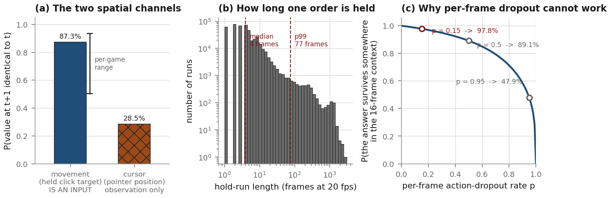
Figure 5. All three panels re-measured for this report over the full 125-game
BC cache. (a) The held click target is bit-identical frame to frame on 87.3% of the
3,554,643 consecutive pairs (per-game range 50.5%–93.6%); the per-frame cursor position, the
same kind of quantity, repeats on 28.5%. The difference is not the sampling rate — it is
that one is a destination held by the game engine and the other is a physical pointer.
(b) The held value persists for a median of 4 frames, p99 77, max 3,061.
(c)--action-dropout is applied per frame, but the held value is replicated
across the whole run and temporal attention over the action slot is causal — so the answer
is hidden only if every frame since the last click is dropped, with probability
p j+1. At the shipped p = 0.15 the shortcut survives on
97.8% of frames. No per-frame rate fixes this: even at p = 0.95 it survives on
47.9%.
Three mechanisms in the codebase were supposed to prevent exactly this, and the reasons they
fail are worth separating.
Per-frame action dropout at p = 0.15. Structurally defeated, per Figure 5(c).
Worse, no_action_embed is a single learned vector, so a dropped frame is
identifiable — the model knows to look at a neighbour rather than being forced to
guess. And evaluate() sets action_dropout = 0, so every validation
number ever reported was measured with the shortcut fully open.
Dropping n = 0 from the BC sum. Necessary and correct: at n = 0 the
target is the action the backbone was fed, and the measured effect is a full nat — the
cross-tab of head n against target offset m shows every trained head’s row
minimum at m = 0 by about 1.0 nat, which vanishes when restricted to transition frames.
Dropping n = 0 removes that. It does nothing about n = 1.
The sticky gate. It correctly separates when from where, and it is why
bc_movement looked good. It does not touch the input.
There is one further measurement that reorders the fix list. Changing the representation so the
held value is a NO_OP rather than a repeated coordinate does not remove the shortcut: over
5,513 event-to-event gaps, the previous click is still inside a 16-frame context on 93.3%
of frames, and the model simply attends a few frames back. But it makes dropout work, because the
answer then exists in exactly one token rather than being replicated across the run —
dropping it once at rate p hides it with probability p rather than
p j+1. At p = 0.15 that is roughly a 30,000× difference in
effectiveness. The representation change and the dropout are worth nothing separately and a great
deal together. The only intervention that is guaranteed is the structural one: remove the movement
action from the policy path entirely.
6. The fix, and what it bought
Cutting the movement action at inference — cursor_valid=False on every
frame, no retraining, one flag — recovers a side-conditioned top-lane policy that was
already in the shipped weights.
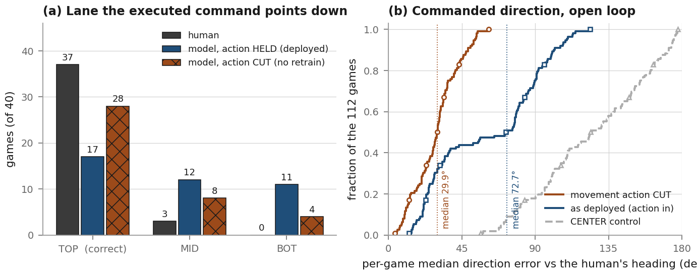
Figure 6.(a) Which lane the executed command points down, 40
closed-loop games (20 blue / 20 red), frames 0–600, recomputed for this report from the raw
per-game rollout record. Wrong-lane (BOT) games go from 11/40 to 4/40; TOP goes from 17 to 28.
The distributional preference — before sampling noise — is even sharper: TOP in
39 of 40 games. (b) Open-loop, teacher-forced on real replay latents across 112 games, the
per-game median angular error of the head’s commanded direction against the champion’s
own heading_screen. Median 72.7° → 29.9°; fraction of frames within 90°
0.641 → 0.844. The CENTER control matters here: because the champion is camera-locked but not
pinned, champion_screen drifts opposite the walk while the camera catches up, so
“direction from the champion to a fixed screen point” would already carry the walk
direction for free. It does not — it sits at 124.4°, at chance and mildly
anti-correlated. The effect is the head’s, not the camera’s.
The side conditioning is the part that convinces. Top lane is a different screen direction on
blue than on red, and the corpus is balanced (75 red / 71 blue, Garen top in 145 of 146 games), so
this is a clean two-way conditional with equal support rather than an imbalance artifact:
Per-game mean commanded direction by side, walk-out window, 112 games. Permutation
p-values from within-game label permutation.
history fed to the model
blue μ
red μ
separation
perm p
median error vs human
HUMAN
−87.4°
+170.9°
101.6°
<2e−4
—
movement action CUT
−94.3°
−173.8°
79.5°
<2e−4
29.9°
as deployed
−63.4°
+42.3°
105.6° (wrong way)
<2e−4
72.7°
CENTER control
+74.5°
+90.0°
15.5°
3.5e−4
124.4°
And it tracks the individual game, not just blue-vs-red: within-side correlation with the
human’s own direction is r = +0.386 on blue (p = 0.005, n = 53) and
+0.287 on red (p = 0.016, n = 59) with the action cut, against +0.06 / −0.13
(both n.s.) as deployed. In the fountain specifically — frames 0–200, where the human
label was the sentinel and the model was therefore never supervised at all — the cut version
scores 37.4° against a chance level of 100.6° (p < 2.5e−4), while the
deployed version scores 111.1° against 114.4° (p = 0.06, i.e. at chance).
Two caveats that survive, and both are load-bearing. First, noact is out of
distribution for this checkpoint: BC saw cursor_valid=False at p = 0.15
per-frame, never for a whole window. Every number in this section is measured in that OOD regime.
It is evidence that the competence exists, not that this checkpoint is deployable as-is. Second,
the model does not navigate finely: full-game tracking of the human’s heading is only
r = +0.104 (sd 0.356, n = 117) against a shuffled null of −0.015. It holds a
per-region average direction rather than turning where the lane turns.
6.1 Why it happens — the two causes are independent
Cutting the channel works because of the label bug in Figure 3(a). For the entire walk-out
— the exact segment being demoed — BC trained the model to issue no command and hold
“your own feet”. That target is only expressible by copying the movement input.
Remove the input and the visual policy learned from post-60 s data surfaces. Which means the two
fixes are not alternatives: the label fix alone leaves the copy channel dominant everywhere else,
and the channel fix alone leaves the walk-out unsupervised. Both, or neither works.
7. What the retrain showed
The obvious next move is to retrain with both fixes: --movement-action-mode none
so the channel never reaches the model, and --prefirst-mode heading so the walk-out
carries a real label. That run finished at 15:04 UTC on the day this report was written —
one full epoch, 25,283 optimizer steps over 119 training games, 6 held out, on the 5080.
It failed its acceptance test.
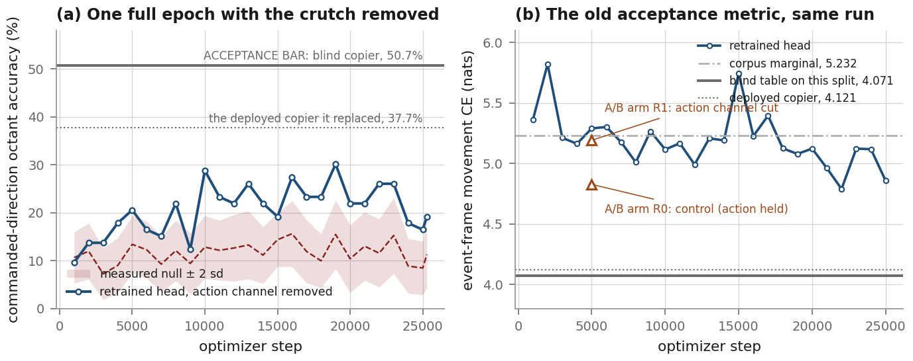
Figure 7.(a) The direction metric over the retrain, against a null
measured by 200 within-game label permutations at every evaluation. The head learns
something: it is above the null on 23 of 25 evaluations, typically by 3–5 sigma, and
the median angular error falls from ~115° early to 58.1° at the end — below the
best-constant-direction baseline of 74.5°. But the bar is not the null. The bar is what a blind
copier scores on the same rows, which is 50.68%, and the run tops out at 30.1%.
(b) The old event-frame CE metric over the same run, for comparison. It never approaches
the blind table (4.071 on this split), and it goes the wrong way relative to the deployed copier
— which is exactly what §8 predicts a metric built as a ratio test against a crutch will
do when you remove the crutch. Also plotted: two arms of the four-arm A/B that preceded this run.
Caveat with teeth:n = 73 scored events per evaluation. The oscillation between
12% and 30% is what 73 samples look like, not a learning curve.
Two readings are available and the honest position is that this run does not separate them.
Reading one: it is the OOD problem, at training time this time. The retrain kept
--allow-movement-source-mismatch, because that is the only configuration that trains
without diverging — and it is the configuration the deployed 102,420-step checkpoint was
trained with. So the frozen action_embed is still fitted to the legacy cursor target
(§2.1), the backbone still never sees the video loss, and now the movement action is forced
to no_action_embed on every frame — a token value the world model saw at
15% frequency during Phase 1 and never as a sustained regime. The head is being asked to read a
backbone that is itself off-distribution.
Reading two: 25,283 steps is not enough. The deployed copier had 102,420. The cost
measured on the 5080 is 24.6 hours per BC epoch, and most of the movement learning in the original
lineage happened in the first few thousand steps (val move 0.871 → 0.750 early, then a crawl
to 0.727 over the remaining ~50k). But that early-fast/late-slow shape was measured on a run that
had the crutch available, so it may say nothing about a run that does not.
The prior four-arm A/B, at 5,000 steps each, is consistent with the retrain and adds one thing:
the control arm (labels as shipped, action held) scored best on the old CE metric of all four,
which is what you would expect if the metric is measuring copying. Rescored at a common operating
point on 3,614 held-out events:
Four 5,000-step arms plus the full retrain, rescored on identical rows. References on the
same rows: chance 6.089, corpus marginal 5.232, blind table 4.1214, deployed copier 4.1212.
arm
labels
movement action
gated bc_movement
event-frame CE
R0 control
sentinel
held
0.7924
4.8733
R1 channel
sentinel
none
0.8298
5.2014
R2 both-mild
heading + interp
event_only
0.8234
5.1742
R3 both-full
heading + interp
none
0.8331
5.2104
retrain A (25,283 steps)
heading
none
0.7799
4.6952
Every arm is above the blind table, i.e. every arm fails the old bar; and the retrain is the
best of them, which is at least the right ordering. What the A/B cannot tell us is anything about
direction, because the direction evaluation crashed on all four arms with an unrecognised CLI flag
(probe_single.py: error: unrecognized arguments: --movement-action-mode). Four arms of
GPU time produced no directional number. That is worth recording as a process failure rather than
a scientific one.
8. The evaluation problem
This is the part of the report that changed my mind about what the project is blocked on.
When the CE bar was retired (§4, second retraction), it was replaced with a direction
metric: the 8-way octant of the commanded direction about the champion, scored on
movement_event frames after each game’s first real click, against a null
measured by within-game label permutation rather than assumed at 1/8. Building it required
three geometric corrections, each measured rather than assumed — the champion is not at
screen centre (median 0.041 away, and using the centre flips the octant on 30.1% of events);
screen space is sheared, and a raw screen angle disagrees with the world octant on 20.1% of events
(the constant that undoes it is derived from the projection, 0.679, and a grid search against true
world angles independently finds 0.69); and every frame before the first real click has to be
dropped. Validated against world ground truth on 6 games and 14,589 events, the shipped reference
agrees on 93.95% of octants at 0.514° median error.
It was a careful metric. And as originally specified it would have passed the deployed
copier.
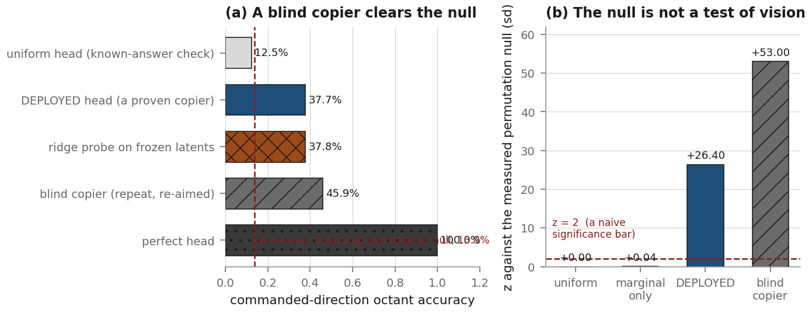
Figure 8.(a) The deployed head — the one that matches a no-pixel
table to 0.0002 nats — scores 37.70% octant accuracy against a measured null of 13.86%, and
that is indistinguishable from a ridge probe on frozen latents (37.8%). Both sit well below
what a blind copier gets for free (45.85%). (b) The same result as z-scores. The null
cannot catch a copier, and the reason is structural: shuffling labels within a game destroys
temporal order, and consecutive clicks are spatially autocorrelated, so the direction to the
old target is already most of the direction to the new one. Known-answer checks on the same
code path: a perfect head scores 100.00% / 0.000°; a uniform head scores 12.46% on a
12.48 ± 0.69% null; a marginal-only head sits at z = +0.04 against the measured
null but z = +11.7 against an assumed 1/8, which is why the measured null is load-bearing;
and a copier head lands exactly on the persistence bar while clearing the null by 53 sd.
So the bar became persistence, recomputed on the rows actually being scored, and the printed
verdict keys off it. Against that bar the deployed checkpoint reads:
dir_octant=37.70% [BAR: blind copier 45.85% on these rows] z=+26.4 n=1313
-> above null but BELOW the blind copier (45.8%) - NOT evidence of vision
Worse at direction than repeating the order already in its own input: 35.4° against
22.6°.
8.1 The deeper problem: every metric here measures imitation, not play
Fixing the bar fixes the copying question. It does not fix the thing underneath it, which is
that every number in this document — cross-entropy against the human’s next
click cell, octant accuracy against the human’s next click direction, angular error against
the human’s own heading — scores whether the model reproduces this particular
human’s exact action. None of them scores whether the resulting play is good.
Three measurements say that gap is not small.
A perfect-perception oracle moves the cell metric by 0.043 nats out of a cheating
oracle’s 1.079 (Figure 4b). Ninety-six percent of what is predictable about the next click
is the human’s private intent, not anything on the screen. A metric where perfect vision buys
4% of the available headroom is not a vision metric.
The independent replication puts a ceiling on it. A ridge on one frozen latent recovers
0.31 bits of next-click direction; the crutch is worth 0.83 bits; conditional on the crutch the
pixels add 0.075 bits. So a pixel-only movement head should be expected to land near 38%
octant accuracy and 43° median error — not near the 56% that “repeat the last
click” gets for free. Under an imitation metric, a correct sighted policy scores worse than
a blind one. That is not a bug in the model.
The human-in-the-loop test disagrees with all of them. Dani plays at plat/emerald from
the decoded latents. If the representation supports competent play and our metrics say the
extractable signal is 0.31 bits, the metrics are measuring something narrower than play.
Two clicks a second apart that lead to the same wave state are the same decision and score as a
total miss. Walking to the correct lane by a slightly different route is a large angular error.
Standing in the right place and last-hitting a different minion is a miss. There is no acceptance
test in this repository that a model could pass by playing well and failing to imitate, and there
is at least one (the CE bar) that a model passed by imitating badly in the specific way that
happens to match the human’s autocorrelation.
What a play-quality metric would have to look like
None of these exist yet; they are the shape of the thing that is missing. (i) Closed-loop
outcome measures on the simulator or the live client — did it reach the lane, how long did it
take, how much gold at 5 minutes, how many deaths — scored against the human distribution
rather than the human trajectory. (ii) Reachability/route metrics that are invariant to the
exact click: distance-to-lane over time, time-in-correct-region, not angular error against one
sampled command. (iii) A human A/B: show a rater decoded rollouts from two checkpoints and
ask which is playing better — expensive, but it is the only metric with the right target, and
we already know a human can read these latents well enough to do it.
9. The rest of the stack
The movement head is the loudest failure but not the only one, and two of the others were
diagnosed wrongly before they were diagnosed rightly. Both corrections went in the direction of
“this component is healthier than we said”, which is worth noting because the
prevailing bias in this project has been toward finding faults.
9.1 The signal is in the frozen features — two independent confirmations
After the “the signal is ABSENT” retraction (§4), the question was re-opened
properly with two investigations that share no code. Both return the same verdict: the information
is present in the frozen representation, and the objective never forced the model to use it.
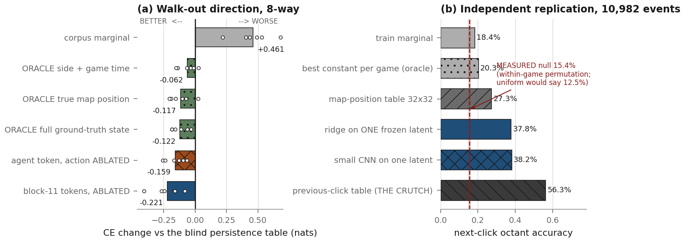
Figure 9.(a) Nested probes on the walk-out window, where the setup is
structurally leak-free — the movement input there is a single constant sentinel across
every frame of every game, so there is no held target to copy. Each probe’s output layer is
zero-initialised and added to a blind persistence table’s log-probs, so the table is
candidate #0 and only genuine cross-game generalising gain can select the probe away from it.
Dots are the six individual held-out games. The frozen, action-ablated features beat the table by
0.16–0.22 nats, versus 0.12 for a probe on perfect ground-truth state — true map
position, every visible hero’s position and HP, own HP and level, side, game time. The
features carry 0.887 nats about the human’s walk direction against the marginal, versus
0.604 for the persistence table and 0.541 for perfect perception. (b) The from-scratch
replication, in accuracy space: a ridge on one frozen 8,192-d latent, no previous click in
any form, 10,982 held-out click events, against a null estimated by 300 within-game permutations.
37.8% against 15.4%, z = 68, 0.31 bits. All six held-out games individually significant (z
9.1–41.7).
The replication is the one to trust, because it validated its estimator in both directions
before reading the result: a known-good 8-way spatial target (the octant of the hero’s
position about map centre) decodes at 97.0% against a 51.3% null, and the same machinery refit on
within-game-shuffled labels lands on the null (17.4% vs 15.9%, 0.007 bits). It survives the
map-position control (a 32×32 position table alone gets 27.3%; the latent adds 0.18 nats
on top of position), the click-leakage control (the latent 0.5 s before the click
still scores 31.6% at z = 51, so this is not a rendered destination marker), and the crutch
control (conditional mutual information given the previous octant = 0.075 bits, z = 36).
A third, separate experiment puts a ground-truth ceiling on the whole thing. Over 130 games and
384,538 events, a probe on hand-built ground-truth state features beats the blind table by
+0.64 nats [0.44, 0.76] with a per-game block bootstrap, winning in 127 of 130 games.
But its own decomposition is the sobering part: split the “self-motion” features into
what a pixel could see (displacement) and what only the memory read knows (heading and speed, i.e.
the standing order), and the pixel-observable half is worth almost nothing (4.578 vs a 4.121 table)
while the memory half carries it (3.937). Much of the apparent ceiling is another read of the same
order, from a different pipe.
9.2 The reward model — the audit was wrong, and so was the design doc
The wiring audit listed the reward twohot buckets as a Phase-3 blocker: 99.79% of 3,554,768
targets land in one bucket, only 34 of 254 intervals are ever occupied, bucket width 0.0236 against
a median nonzero reward of 0.001. All four numbers replicate exactly (I re-measured them for this
report and got the same frame counts). The diagnosis does not survive them.
Our grid is 6.7× finer than DreamerV3’s default on our own data, not
coarser, and carries 4.4× more learnable nats (0.0396 vs 0.0091). “Sized for
returns” points the wrong way. A minion last-hit moves 59–88% of the twohot mass to the
next bin; under DreamerV3’s grid it would move 9–13%.
35 occupied bins is the correct answer, not a symptom: they span 1,290 gold in one
frame and the largest reward in the corpus is 1,090 gold.
The trained head reads income events at held-out AUC 0.904, with clean controls —
true reward 1.000, noise 0.506, game-time confound 0.501, passive-tick confound 0.485.
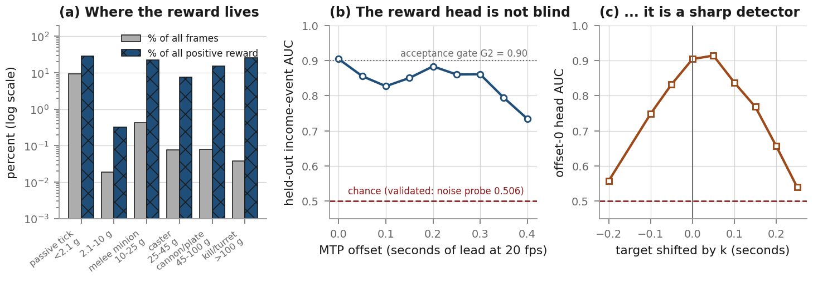
Figure 10.(a) Re-measured for this report over all 3,554,768 frames:
89.93% of frames carry exactly zero reward; 9.41% carry the passive gold drip, which is 28.7% of
all positive reward and is action-independent (a constant-rate term cancels out of PMPO
advantages); and the 0.63% of frames that carry a real income event carry 71% of the reward.
(b) Every MTP offset of the reward head carries signal across the full 0.4 s window.
(c) The offset-0 head is a sharp detector, half-width ~±0.1 s, at chance by
±0.25 s — which is what establishes that (b) is genuine anticipation rather than
temporal clustering, since offset 4’s 0.883 at 0.2 s lead is not available by shifting
offset 0’s output (0.656).
The design document had also recorded a falsifier as already fired: “measured AUC
for ‘will this swing last-hit’ is 0.431 / 0.29 — worse than chance. Do not treat
the current reward head as a reward model.” That is overturned. On frozen v7 latents,
“gold event within the next 0.5 s” reads out at held-out AUC 0.778 (MLP) / 0.738
(linear) with validated controls, and through the trained head an independent measurement gets
0.886–0.904. What is true, and was not the recorded reason: the reward’s scalar
magnitude is not readable (R² < 0). The head should be trained on the event, not the
scalar.
Where the reward is genuinely weak is elsewhere, and none of it is the buckets.
It is not zero-sum.corr(own gold gained, lane gold-diff change) = 0.697–0.708
at every window from 0.4 s to 300 s — which is exactly the arithmetic null of 0.707
for two independent equal-variance streams. Farming 400 g while the opponent farms 0 and farming
400 g while he farms 800 score identically. Half the lane-advantage variance is invisible at every
timescale the policy acts on. Under solo gold, 0.1% of 0.4 s windows are negative; under gold-diff,
13.1%. The only negative feedback in the entire reward is a one-shot −0.2 that fires on 0.01%
of frames.
The horizon is 0.4 s. γ = 0.997 is an 11.5 s half-life; λ = 0.95 is a 1.0 s
mixing length; the rollout is 8 frames. Only 3.8% of a γ-consistent discounted return lies
inside the horizon; the other 96.2% is whatever the (untrained, zero-init) value head guesses. And
95.0% of imagined rollouts at H=8 contain no reward event at all. PMPO uses only the sign of
the advantage, so in 95% of samples the positive/negative split is a coin flip. The reward is not
too small for PMPO — PMPO is scale-invariant — it is too rare.
The exchange rates are off in a specific direction. A champion kill is +0.30 against own
death −0.20, i.e. 1.5:1, a standing instruction to all-in on coin-flip trades. The measured
opportunity cost of a death is 107 g at 30 s and 192 g at 60 s, and it hands the enemy a ~300 g
bounty, so the true zero-sum cost is ~480–500 g against a configured 200. Meanwhile
continues = ones in imagination, so death is not terminal in the dream, and gold
accrues while dead (3.15 g/s dead vs 6.99 g/s alive) — the reward literally pays for being
dead. The one thing we guessed right: gold-per-death of 0.005 is within 20% of OpenAI Five (0.006)
and identical to JueWu 5v5 (0.005).
The sequencing argument for keeping it solo-gold survives all of this: you do not need the
opponent’s gold to learn to last-hit, and last-hitting is the Bronze milestone. Zero-sum buys
trading and denying, which is Emerald-tier. What changed is that the stated data reason for
keeping it solo is gone.
9.3 The enemy-gold stream, re-measured
The design document claimed a gold-diff reward “needs the opponent resolved and
visible, which fails exactly when the opponent leaves screen”. That claim was false on
the day it was written: the screen-space gate was deleted from the recorder on 2026-05-08 and the
document was authored 2026-08-13, three months later. visible_heroes is a full heap
read of all ten champion structs; the name lies. It carries exactly ten entries on
100.000000% of 4,171,462 labelled frames, and opponent gold_total is present on
exactly the same frames as our own, to six decimals. These are in-client replays: the
.rofl carries full server state, so fog of war never applied to the recorder.
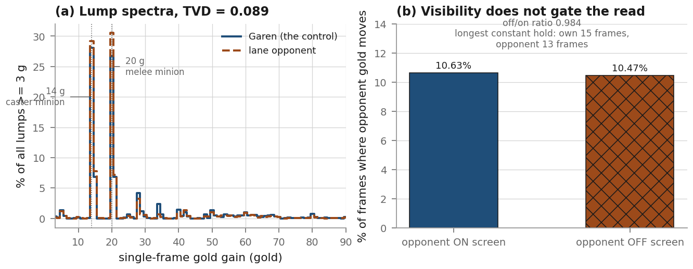
Figure 11. Independently re-measured for this report on a 24-game stratified
sample, reading labels.json directly. (a) The distribution of single-frame gold
gains ≥ 3 g for Garen (the known-live control) and for the resolved lane opponent. Both peak on
the same two spikes — 14 g caster minion and 20 g melee minion — with a total variation
distance of 0.089, against 0.079 reported over the full 146 games. (b) The specific
feared failure: a value refreshed only when the opponent is on camera. The opponent’s gold
moves on 10.63% of frames while on screen and 10.47% while off screen, a ratio of 0.984; the longest
constant hold in the sample is 15 frames (0.75 s) for Garen and 13 frames for the opponent. A
vision-gated read would show holds of tens of seconds after every recall.
The sharpest test in the original work is one I did not reproduce here but should be recorded:
League’s passive drip hits all ten champions on the same server tick, so you can locate drip
frames by Garen’s gold and ask whether the opponent ticks on the same frame. The answer
is 0.9819 off-screen, 0.9804 in fog, 0.9765 on-screen — off-screen is higher. In one
match, two heroes who were never once on camera ticked on 99.0% of Garen’s drip frames. The
one residual asymmetry in Figure 11(a) — Garen has about twice the opponent’s share of
28–35 g lumps — is a Garen fact, not a data fact: his Q and E hit multiple minions inside
one 50 ms frame, so two minions land in one delta. It is evidence the enemy stream is not
derived from his.
And the counterexample in the same schema: champion_stats.gold (current gold, as
opposed to gold_total) is garbage — a single per-hero constant for the entire
game in 130 of 130 hero-games audited, with magnitudes like −3.77e22 for Garen and 1.46e31
for Vladimir. The root cause is the acceptance-test pattern from §4.1: gold_earned
had to change between two snapshots to be accepted and is correct; gold_current
only had to sit in a plausible range, and a field that never moves passes that test. Blast radius
is nil for training — nothing under src/ reads it — but 59 matches now
carry it on disk, one key away from the good field in the same dictionary.
9.4 MTP offset 0 is dead, in every checkpoint on disk
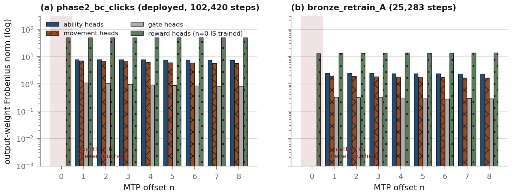
Figure 12. Measured for this report by loading both checkpoints and taking the
Frobenius norm of every per-offset output weight. Offset 0 is exactly 0.0 for the ability,
movement and gate heads in both — including the retrain that finished today — because
bc_next_action_loss runs for n in range(1, mtp_length). The reward head,
whose loss does cover n = 0, is the control and is nonzero everywhere. The zero is
not decay: AdamW at lr 3e-4, wd 0.1 over 102,420 steps is a 22× shrink, and never exactly
zero in fp32. The decisive evidence is the optimizer state — exactly six Adam slots have
exp_avg_sq identically 0, i.e. the gradient was exactly 0 on all 102,420 steps.
This is mechanically expected and harmless in Phase 2. What is not harmless is what reads it.
train_imagination.py reads the policy at MTP_OFFSET and the prior at
literal 0. The prior is a deep copy of the policy head, so at Phase-3 step 0 a correct
KL must be exactly zero. Measured on the real head: 7.286874 nats as coded, 0.000000
correct. And because prior@0 is exact uniform,
KL(π ∥ uniform) = log K − H(π), so minimising it maximises entropy. At
the default --pmpo-beta 0.3 the term contributes +2.19 to the loss and its gradient
pushes the offset-1 policy — the one Phase 3 also samples from — toward Bernoulli(0.5)
on nine abilities (4.5 presses per dreamed frame) and uniform over movement. It is not a vacuous
regulariser; it actively erases the BC policy.
One intuitive concern in this area was refuted by measurement and is worth recording as
such: BC only applies the policy head to token positions 0..T−2 while inference reads T−1,
so the deployed read position is never supervised. Teacher-forced on 1,200 val windows it costs
nothing measurable — gate fire rate 0.1290 at position 15 against 0.1295 mean over 0..14
(ratio 0.996), gate BCE 0.2987 vs 0.2999, token norm 5.479 vs 5.475. A prior scratchpad result had
reported a 60% command-rate difference; those were two independent self-fed rollouts with diverging
action histories, and teacher-forced on identical inputs the difference is 0.4%.
9.5 Phase 3 cannot take a step
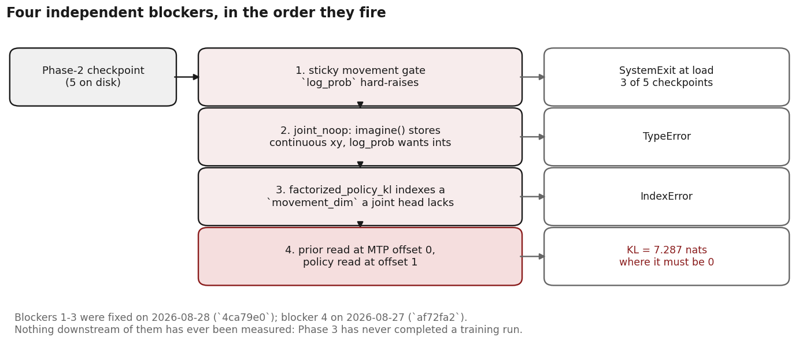
Figure 13. Four independent blockers, established by attempting the load and one
step on both live lineages. They fire in order, so fixing any one reveals the next.
There is a fifth issue that fires only once a step is possible: imagine() calls
sample() without prev_movement_idx, so a sampled NO_OP decodes to screen
centre rather than “repeat the standing order” — a fake click-the-middle action
injected into roughly 28% of dreamed frames. And a sixth that fires after that: at Phase-3 step 0
the value head is zero-init and 98.4% of the reward head’s predictions on real frames are
positive, so At = Rt − vt > 0 almost everywhere, PMPO’s
negative set is nearly empty, and compute_pmpo_loss degenerates into “raise the
log-probability of everything you sampled”. The trainer now aborts on a degenerate advantage
split rather than collapsing quietly.
10. How we compare to the field
There is no official Dreamer 4 release. Of nine third-party repositories that implement any of
it, exactly three implement a policy (behaviour cloning), and three implement Phase 3; two
of those three are individuals working on toy or small-scale tasks. Nobody outside DeepMind has
reproduced the Minecraft result.
The finding that matters for this report: not one of them has any anti-copy machinery.
No action dropout, no null-action conditioning, no classifier-free guidance, no stop-gradient on
the action stream, no action-free actor branch. A grep across the repositories for
dropout|mask|detach|stop_grad|cond_drop|classifier.free|null action|no_action turns up
augmentation-ID dropout, reward-embedding dropout, and flow-matching bootstrap detaches —
nothing touching actions. Nor does the paper: the word “dropout” appears exactly once
in arXiv 2509.24527, referring to the tokenizer’s MAE patch dropout. And no reported baseline
in the paper is blind — the strings “chance”, “no-op” and
“random policy” do not occur.
One reference library ships a test that asserts copying works.
lucidrains/dreamer4’s test_toy_action_bc.py feeds
latents = zeros(1, 8, 64, 16) — literally zero observations — and asserts
that the policy reproduces the action sequence [1,2,3,0]*2 from action history alone.
It is our experiment run with the opposite sign convention: upstream treats action-history copying
as a capability to verify, not a pathology to suppress.
And one repository has our bug at 85% instead of 90% and never measures it:
edwhu/dreamer4-jax’s toy behaviour policy is commit-then-switch with
hold_min=4, hold_max=9, so a_{t+1} == a_t with probability ≈ 85%
on a 4-way action. A pure copy head scores ~85% BC accuracy there without seeing a pixel. To that
author’s credit, they are the one person in the field who left a written trace of noticing the
hazard — a comment explaining why the policy MTP starts at offset 1 while the reward MTP
starts at 0, which is the same reasoning we used.
Action representations and the copy shortcut each one hands a BC head.
codebase
action representation
P(at+1 = at)
anti-copy
Dreamer 4 / IamCreateAI / open-dreamer
23 binary keys + 121-class camera delta
high for keys, low for the delta
none
nicklashansen
continuous torques, instantaneous
low
n/a (no policy)
vijayabhaskar
2-D continuous torques, smooth
high-ish
none
edwhu
5-way categorical, held 4–9 steps
≈ 85% (never measured)
none
ahriuwu
HELD screen coordinate, frozen across the run
87.3% bit-for-bit (measured)
dropout (defeated), --movement-action-mode
DreamerV3 cannot have this bug, and the reason is structural rather than lucky. Verified
in both the current and pre-rewrite JAX trees and in the PyTorch port: (a) the actor’s entire
input is concat[deter, stoch] — the previous action enters only through the RSSM
recurrence, never as an actor input; (b) the actor is trained only on imagined rollouts of
its own samples, with replayed data contributing only the starting state; and (c) there is no
behaviour-cloning or action-prediction loss anywhere. That third point is airtight because the code
enforces its complete loss set with an assertion against eight fixed names, and a grep for
behavio(u)?r.?clon|bc_loss|imitat|action_pred|action_head|supervis across both
generations returns zero hits. “Emit at−1” lowers no DreamerV3
loss because there is no dataset action label for the actor to reproduce. Dreamer 4 introduces
behaviour cloning, and with it this hazard.
The uncomfortable conclusion the survey reaches is that the field is not protected against this;
it is unmeasured. The three repositories with a policy all use BC as an initialisation for a
downstream RL phase that can correct for it. Ours is what we deploy. They are unmeasured and
downstream-corrected; we are measured and terminal.
Two things we are ahead on, for balance. We are the only implementation in the survey that logs
a blind baseline next to its BC loss at all — the numbers in Figure 4 exist because someone
wrote MOVE_CE_BLIND_TABLE = 4.1214 into the trainer. And we are the only one with a
deployment path: HID gadget, preflight, provenance stamped into meta.json, a hard
refusal to inject without a resolvable commit. No reference repository has a deployment story at
all.
11. What is actually blocking
In descending order of how much I would bet on each.
There is no play-quality metric. Everything we can currently measure is imitation
fidelity, and §8 shows that a correct sighted policy is expected to score worse on those
metrics than a blind copier. Until an outcome-based evaluation exists, a retrain cannot be graded,
which means GPU time cannot be spent rationally. This is the top of the list and it needs no GPU.
The evaluation split is too small for the metric that replaced the CE bar. The direction
metric scores n = 73 events per evaluation. Figure 7(a)’s oscillation between 12% and
30% is sampling noise. This is a one-line fix (score more of the val loader) and it gates every
subsequent decision.
The frozen action embedding is fitted to the wrong target (§2.1, 40% cell agreement),
and the only configurations that fix it — unfreezing the backbone, or training the embedding
— both diverge to NaN, for reasons that are still not isolated. Either re-pretrain Phase 1 on
the click target, or find the divergence. Every frozen-backbone result in this report has this
underneath it.
Phase 3 has never run, so nothing about the imagination path has ever been measured on
dreamed latents rather than real ones. The reward head’s AUC, the value head’s
calibration, whether the reward is even action-sensitive through the dynamics — the actual
precondition for a policy gradient — are all unmeasured. Four blockers are now fixed and the
fifth and sixth are known.
The world model dreams for about 10 frames. Two candidate causes: scale/budget
(146 M at <1 epoch against 1.6 B) and the missing context/batch-length margin (§1.2). The
second is cheap to test and has never been tested.
The deployed rig is a fork./mnt/storage/ahriuwu-live/ carries its own
scripts/ — 162 diff lines in play_live.py, 101 in
hid_server.py, 174 in hybrid_sender.py, plus a
calibrate_mouse.py that exists only there. Every fix in this repository is absent from
the thing that plays, and the current best checkpoints cannot run on it at all.
What is not blocking, as far as the measurements go: the tokenizer (a human plays
competently from its decodes; two independent probes find the signal in its latents); the reward
buckets (6.7× finer than the reference, 4.4× more learnable nats); the reward head
(AUC 0.904 with clean controls); the MTP axis (verified end to end, synthetically and on the real
checkpoint — a real off-by-one would be a 1.0-nat effect and every diagonal deviation measured
is 0.0001–0.02); and the deployed read position (measured cost ~0).
12. Honest limitations
Ordered by how much they should reduce confidence in this document.
Six held-out games is 5 degrees of freedom. Most paired t-statistics in §9.1
are on that split. The powered versions come from k-fold over 112 or 36 games, and those
games were seen by BC and by the tokenizer, though never by the readout. The two agree throughout,
which is the reason to believe them, but neither is a clean held-out design.
The action ablation is not complete. The held click target still decodes from the ablated
features at 4.22 nats against a 5.30 marginal — better even than from the champion’s own
actual future path (4.50). Some of that is legitimate (the destination is on screen and the champion
is walking to it), but a residual movement-token signal smeared through 18 layers of spatial
attention cannot be excluded. Two reasons it does not explain the headline results: the nested
baseline is the table evaluated at the true previous bin, so recovering the previous bin adds
nothing; and the entire walk-out result is immune, because the movement input there is a constant
sentinel. Note also that the earlier claim “the ablation is complete in both directions”
was itself a 5-game-probe artifact.
Everything in §6 is measured out of distribution.noact is a regime BC
never saw for a whole window.
The retrain does not separate its two explanations (§7), and at n = 73 per
evaluation it could not have.
How much of the recovered signal is route prior versus frame-by-frame navigation.
Shuffling labels within a game leaves the probes 0.13 nats ahead of the table, because a
game’s direction histogram survives that permutation. Roughly 0.32 of the 0.774 nats the
walk-out probe extracts is region-level prior and ~0.45 is frame-specific. Consistent with the
surviving caveat that it knows the route but does not turn where the lane turns.
“Raw v7 latents carry nothing” is NOT established. The raw arm in the nested
probe scores −0.019 (t = −0.27), i.e. nothing — but it reads a
single frame while the dynamics features carry 16, and no multi-lag raw arm was run. What
is established: the dynamics is a function of the v7 latent sequence and the ablated actions
and nothing else, so the information is provably present in the sequence. The from-scratch
replication then finds 0.31 bits in a single raw latent, which suggests the nested probe’s raw
arm was underpowered rather than informative.
No external oracle for the labels. Neither the dataset nor the repository contains Riot
match-API participant data, so no hero’s final gold_total was ever checked against
ground truth. Every liveness argument in §9.3 is internal consistency plus physics plus the
control champion. A systematic offset shared by all ten heroes would be invisible to all of it
— though it would also cancel exactly in a gold diff.
The recorder that produced this corpus is not in this repository. Every
labels.json and raw_mem.json on disk carries a per-hero
inventory field that the checked-in _mem_loop never writes, in any commit.
A newer Windows-side working tree wrote this data. The divergence appears to be purely additive
— the on-disk key sets are a strict superset of what the repository version emits — but
I reasoned from the checked-in code plus the data, not from the code that ran.
One patch, one champion, one lane. Everything here is Garen top on 16.9.772. The
gold_current offset being wrong on this patch is a standing warning that memory offsets
are patch-fragile.
Nothing in this report was measured inside imagination, because Phase 3 has never run.
Distribution shift between real and dreamed agent tokens is entirely unmeasured and is the single
largest remaining unknown for that phase.
Appendix A. Which measurements to trust
A reader should be able to tell, from this document alone, which numbers would survive a
re-measurement. My own ranking:
trust
what, and why
High
Anything with a validated estimator — a planted-signal positive
control and a shuffled-label negative control run on the identical code path before the
result was read. That is the Decision-0 replication (§9.1), the reward-head AUCs (§9.2,
controls at 1.000 / 0.506 / 0.501 / 0.485), and the direction metric’s known-answer checks
(§8). Also: anything established by a round-trip or by planting distinguishable values —
bin encode/decode, twohot, latent folds, RoPE index spaces, KV-cache paths, camera projection to
≤1.24 px over 11,787 points. That whole class came back clean and has not needed
re-auditing.
High
Corpus statistics re-measured for this report from the 125-game cache:
the 87.3% repeat rate, the hold-run distribution, the dropout survival curve, the reward
decomposition, label coverage, ability press rates, MTP head norms. These are counts over 3.55 M
frames and there is nothing to be clever about.
Medium
Anything with n in the thousands and a per-game breakdown that
is consistent in sign — the walk-out probes (negative in 6/6 held-out games, 105/112 in CV),
the lane table (40 games), the open-loop direction results (112 games). The effect sizes may move;
the signs will not.
Low
Anything with n < 100 scored units: the retrain’s
direction trajectory (n = 73 per point), the held-out reward AUCs (34 events on one game),
the per-offset anticipation AUCs (27–73 events per offset). The direction of these results is
probably right; the values should not be quoted to three digits, and I have tried not to.
Do not trust
Any probe fitted on five games. Any comparison against a bar
fitted on a different split than it is read on. Any “this configuration causes the
NaN” attribution made from a short run. Any median angle on n < 500 in a metric
that is bimodal with an effective sample size of about 2 because each game contributes essentially
one direction.
Appendix B. Figure provenance
Every figure is generated by reports/figures.py and reports/figures2.py
from committed data. Nothing is mocked. Where a number appears in a figure but not in any document,
it was measured for this report and the source is named below.
fig
source
1, 13
Schematics. Values annotated on them are cited in the surrounding text.
2
docs/PAPER_DEVIATIONS.md §1.4–1.5, §2.6, §6.1–6.2, plus the shipped checkpoint’s own model_config.
3, 5, 10(a)
Measured for this report from data/cache_baseline.pt and data/cache_retrain_heading.pt by reports/measure_corpus.py; raw arrays in reports/figdata/.
(a) Recomputed for this report from scratchpad/lane/analyze.json using the lane-anchor rule in lane/analyze.py:147. (b) scratchpad/decision0/head_walkout.json, per-game arrays.
7
Parsed for this report from ops/bronze_retrain_run.log (the run finished 2026-09-02 15:04 UTC) and ops/rescore_*.log.
8
Commit 805274d’s measured values, which are the metric’s own known-answer checks.
9
scratchpad/decision0/ce_wdir8.json and docs/DECISION0_REPLICATION.md §4.
10(b,c)
docs/REWARD_MODEL_INVESTIGATION.md §5b.
11
Measured for this report by reports/measure_gold.py, reading labels.json for a 24-game stratified sample directly.
12
Measured for this report by loading data/phase2_bc_clicks/agent_finetune_latest.pt and data/bronze_retrain_A/agent_finetune_latest.pt and taking per-offset weight norms.
Source, figures and measurement scripts are committed under
reports/. The five retracted claims quoted in §4 are quoted from the documents
that made them; each of those documents now carries its own correction section, and the corrections
are the parts worth reading.